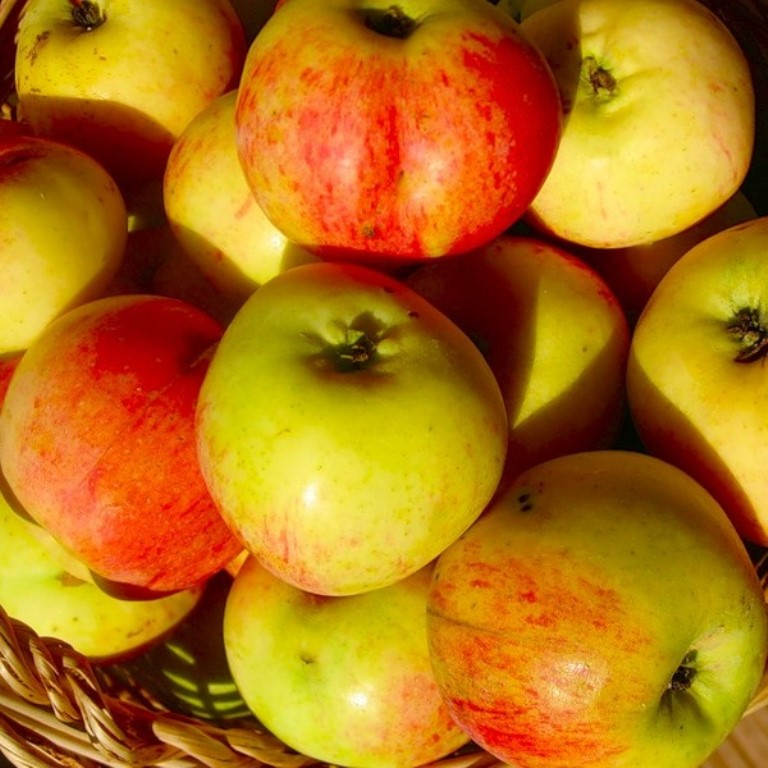

|  |
Яблоня Антоновка Десертная
|
Этот сорт
любят и уважают не только за красивые и вкусные яблоки, регулярность и обильность плодоношения.
Само дерево неприхотливо к условиям выращивания, хотя и уступает по всем показателям материнскому сорту.
Оно хорошо растет практически на любой почве, не нуждается в частых подкормках или поливах,
нетребовательно к уходу, терпимо к неверной или агрессивной агротехнике.
Само дерево аккуратно и компактно, зимостойко.
Плоды
достаточно крупных размеров, могут вырастать до 190-220 граммов, а некоторые даже намного больше.
Они часто несимметричные, средней одномерности, округлые, шаровидные, с ярко выраженной ребристостью,
могут быть немного вытянутые, но не цилиндрические.
Кожица плодов плотная, прочная, эластичная, хорошо защищает мякоть от механических повреждений.
Основной ее цвет светло-зеленый или салатовый, может быть немного кремовым.